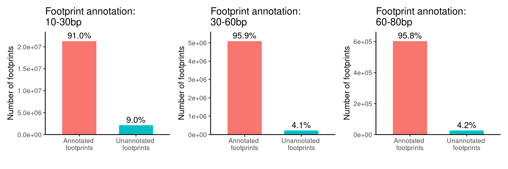
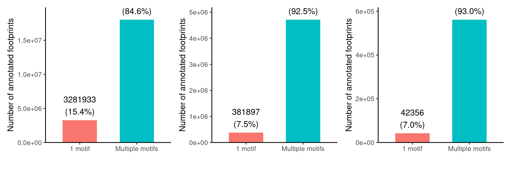
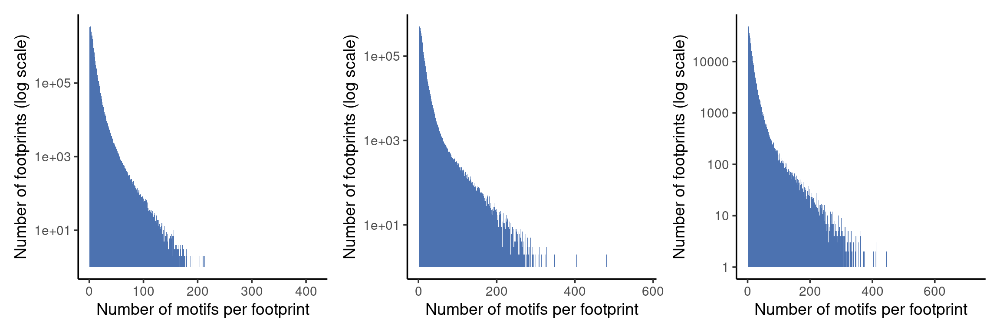
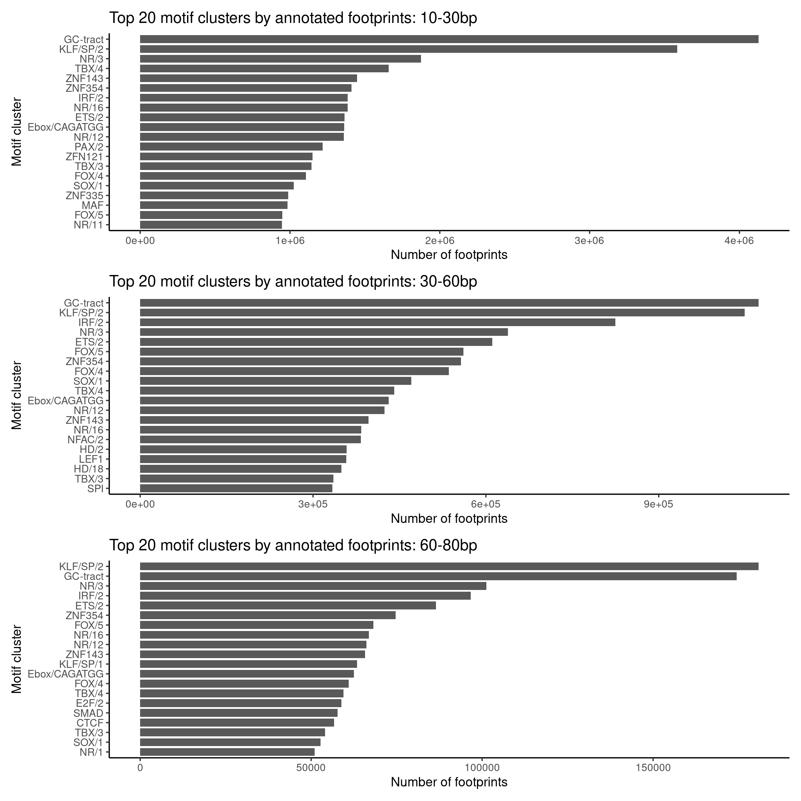

Last updated: 2026-03-16
Checks: 6 1
Knit directory: fiberseq/
This reproducible R Markdown analysis was created with workflowr (version 1.7.1). The Checks tab describes the reproducibility checks that were applied when the results were created. The Past versions tab lists the development history.
The R Markdown file has unstaged changes. To know which version of the R Markdown file created these results, you’ll want to first commit it to the Git repo. If you’re still working on the analysis, you can ignore this warning. When you’re finished, you can run wflow_publish to commit the R Markdown file and build the HTML.
Great job! The global environment was empty. Objects defined in the global environment can affect the analysis in your R Markdown file in unknown ways. For reproduciblity it’s best to always run the code in an empty environment.
The command set.seed(20250831) was run prior to running the code in the R Markdown file. Setting a seed ensures that any results that rely on randomness, e.g. subsampling or permutations, are reproducible.
Great job! Recording the operating system, R version, and package versions is critical for reproducibility.
Nice! There were no cached chunks for this analysis, so you can be confident that you successfully produced the results during this run.
Great job! Using relative paths to the files within your workflowr project makes it easier to run your code on other machines.
Great! You are using Git for version control. Tracking code development and connecting the code version to the results is critical for reproducibility.
The results in this page were generated with repository version 42efd3c. See the Past versions tab to see a history of the changes made to the R Markdown and HTML files.
Note that you need to be careful to ensure that all relevant files for the analysis have been committed to Git prior to generating the results (you can use wflow_publish or wflow_git_commit). workflowr only checks the R Markdown file, but you know if there are other scripts or data files that it depends on. Below is the status of the Git repository when the results were generated:
Unstaged changes:
Modified: analysis/annotation_by_location_motif_cluster_refined_peaks.Rmd
Note that any generated files, e.g. HTML, png, CSS, etc., are not included in this status report because it is ok for generated content to have uncommitted changes.
These are the previous versions of the repository in which changes were made to the R Markdown (analysis/annotation_by_location_motif_cluster_refined_peaks.Rmd) and HTML (docs/annotation_by_location_motif_cluster_refined_peaks.html) files. If you’ve configured a remote Git repository (see ?wflow_git_remote), click on the hyperlinks in the table below to view the files as they were in that past version.
| File | Version | Author | Date | Message |
|---|---|---|---|---|
| Rmd | 95d0e19 | XSun | 2026-03-13 | update |
library(ggplot2)
library(data.table)
library(patchwork)
fp_lengths <- c("10-30bp", "30-60bp", "60-80bp")
#fp_lengths <- c("10-30bp","60-80bp")
#fp_length <- "60-80bp"
base_out_dir <- "/project/spott/xsun/fiberseq/2.annotating_footprints/results/annotate_fp_motif/motif_annotation/refined_peaks/"This analysis aimed to annotate Fiber-seq footprints with known motif clusters from the Vierstra motif clustering resource (/project/spott/kevinluo/Fiber_seq/data/motifs/Vierstra_motif_clustering/hg38.archetype_motifs.v1.0.bed.gz, collected by Kevin).
The workflow consisted of two major stages:
bedtools./project/spott/xsun/fiberseq/2.annotating_footprints/13.motif_cluster_by_chr.sbatch /project/spott/xsun/fiberseq/2.annotating_footprints/15.run_fp_motif_overlap_by_chr.sbatch /project/spott/xsun/fiberseq/2.annotating_footprints/16.submit_fp_motif_overlap_jobs.sh
The footprint size bins analyzed were:
10-30bp30-60bp60-80bpTo keep only reasonably motif matches, overlaps were filtered by requiring at least 5 bp overlap:
The processed overlaps are storaged here: /project/spott/xsun/fiberseq/2.annotating_footprints/results/annotate_fp_motif/motif_annotation/refined_peaks/
Taking the footprints in 60-80bp as an example
annotate_fp_motif.filtered_overlap.RDS & annotate_fp_motif.filtered_overlap.tsv.gz: full filtered overlap table after applying overlap_bp >= min_overlap (5bp)
zcat /project/spott/xsun/fiberseq/2.annotating_footprints/results/annotate_fp_motif/motif_annotation/refined_peaks/60-80bp/annotate_fp_motif.filtered_overlap.tsv.gz | head
fp_chr fp_start fp_end motif_chr motif_start motif_end motif_cluster match_score motif_strand best_model num_models overlap_bp fp_name
chr1 10464 10533 chr1 10460 10477 ZNF768 4.6512 - ZN768_HUMAN.H11MO.0.C 1 13 chr1-10464-10533
chr1 10464 10533 chr1 10461 10475 NR/3 7.4443 - RXRA_HUMAN.H11MO.0.A 1 11 chr1-10464-10533
chr1 10464 10533 chr1 10461 10478 NR/12 2.7163 - RARA_MA0730.1 2 14 chr1-10464-10533
chr1 10464 10533 chr1 10463 10475 KAISO 6.9049 + ZBTB33_MA0527.1 1 11 chr1-10464-10533
chr1 10464 10533 chr1 10465 10477 KAISO 9.7757 - ZBTB33_MA0527.1 3 12 chr1-10464-10533
chr1 10464 10533 chr1 10467 10484 KLF/SP/2 6.4928 - SP1_MOUSE.H11MO.0.A 1 17 chr1-10464-10533
chr1 10464 10533 chr1 10467 10486 ZNF324 7.3886 + Z324A_HUMAN.H11MO.0.C 1 19 chr1-10464-10533
chr1 10464 10533 chr1 10471 10482 GCM 7.1602 - GCM1_GCM_3 2 11 chr1-10464-10533
chr1 10464 10533 chr1 10471 10488 PAX/2 7.7185 - PAX5_HUMAN.H11MO.0.A 1 17 chr1-10464-10533annotate_fp_motif.top1.RDS & annotate_fp_motif.top1.tsv.gz : keep only the best motif per footprint (based on match_score).
zcat /project/spott/xsun/fiberseq/2.annotating_footprints/results/annotate_fp_motif/motif_annotation/refined_peaks/60-80bp/annotate_fp_motif.top1.tsv.gz | head
fp_chr fp_start fp_end motif_chr motif_start motif_end motif_cluster match_score motif_strand best_model num_models overlap_bp fp_name
chr1 10464 10533 chr1 10482 10499 KLF/SP/2 13.0016 - SP3_HUMAN.H11MO.0.B 14 17 chr1-10464-10533
chr1 15143 15173 chr1 15135 15148 DMRT1 9.6864 - DMRTB_MOUSE.H11MO.0.C 2 5 chr1-15143-15173
chr1 17135 17189 chr1 17177 17197 ZNF335 8.1558 - ZN335_HUMAN.H11MO.0.A 2 12 chr1-17135-17189
chr1 19705 19778 chr1 19761 19777 IRF/2 10.1224 + BC11A_HUMAN.H11MO.0.A 5 16 chr1-19705-19778
chr1 19782 19845 chr1 19808 19817 SREBF1 10.7497 + SRBP2_HUMAN.H11MO.0.B 4 9 chr1-19782-19845
chr1 20929 20955 chr1 20944 20964 GC-tract 10.1726 + THAP1_HUMAN.H11MO.0.C 1 11 chr1-20929-20955
chr1 24972 25023 chr1 24965 24979 HAND1 9.229 - HAND1_MOUSE.H11MO.0.C 1 7 chr1-24972-25023
chr1 29214 29241 chr1 29223 29240 KLF/SP/2 15.0018 - SP2_HUMAN.H11MO.0.A 23 17 chr1-29214-29241
chr1 29262 29283 chr1 29270 29287 KLF/SP/2 10.9992 - SP3_HUMAN.H11MO.0.B 16 13 chr1-29262-29283annotate_fp_motif.top5.RDS & annotate_fp_motif.top5.tsv.gz : keep top 5 motifs per footprint (based on match_score).
zcat /project/spott/xsun/fiberseq/2.annotating_footprints/results/annotate_fp_motif/motif_annotation/refined_peaks/60-80bp/annotate_fp_motif.top5.tsv.gz | head
fp_chr fp_start fp_end motif_chr motif_start motif_end motif_cluster match_score motif_strand best_model num_models overlap_bp fp_name
chr1 10464 10533 chr1 10482 10499 KLF/SP/2 13.0016 - SP3_HUMAN.H11MO.0.B 14 17 chr1-10464-10533
chr1 10464 10533 chr1 10502 10518 NR/16 11.5888 - THA_HUMAN.H11MO.0.C 13 16 chr1-10464-10533
chr1 10464 10533 chr1 10486 10503 KLF/SP/2 11.2207 - SP2_HUMAN.H11MO.0.A 9 17 chr1-10464-10533
chr1 10464 10533 chr1 10480 10489 MBD2 11.1198 - MBD2_HUMAN.H11MO.0.B 2 9 chr1-10464-10533
chr1 10464 10533 chr1 10489 10509 GC-tract 10.5797 - THAP1_HUMAN.H11MO.0.C 1 20 chr1-10464-10533
chr1 15143 15173 chr1 15135 15148 DMRT1 9.6864 - DMRTB_MOUSE.H11MO.0.C 2 5 chr1-15143-15173
chr1 15143 15173 chr1 15142 15152 FOX/4 8.4046 + FOXP1_HUMAN.H11MO.0.A 1 9 chr1-15143-15173
chr1 15143 15173 chr1 15143 15152 RBPJ 8.3251 - RBPJ_MA1116.1 1 9 chr1-15143-15173
chr1 15143 15173 chr1 15162 15171 TFAP2/1 7.9443 - TFAP2C_TFAP_6 1 9 chr1-15143-15173A footprint is considered annotated if it has at least one motif passing the overlap filter.
p <- list()
for (fp_length in fp_lengths){
annotation_summary <- readRDS(paste0(base_out_dir , fp_length, "/annotation_summary.RDS"))
df_plot <- data.table(
category = c("Annotated \nfootprints", "Unannotated \nfootprints"),
count = c(annotation_summary$annotated_footprints, annotation_summary$unannotated_footprints)
)
df_plot[, percent := count / sum(count) * 100]
p[[length(p)+1]] <- ggplot(df_plot, aes(x = category, y = count, fill = category)) +
geom_col(width = 0.6) +
geom_text(aes(label = sprintf("%.1f%%", percent)),
vjust = -0.4, size = 5) +
scale_y_continuous(expand = expansion(mult = c(0, 0.1))) +
theme_classic(base_size = 14) +
labs(
x = "",
y = "Number of footprints",
title = paste0("Footprint annotation: \n", fp_length)
) +
theme(legend.position = "none")
}
wrap_plots(p)
This is summarized by counting how many motif hits are associated with each footprint.
p <- list()
for (fp_length in fp_lengths){
fp_dist_summary <- readRDS(paste0(base_out_dir , fp_length, "/motifs_per_footprint_summary.RDS"))
plot_dt <- data.table(
category = c("1 motif", "Multiple motifs"),
count = c(
fp_dist_summary$footprints_with_1_motif,
fp_dist_summary$footprints_with_multiple_motifs
),
proportion = c(
fp_dist_summary$prop_with_1_motif,
fp_dist_summary$prop_with_multiple_motifs
)
)
p[[length(p)+1]] <- ggplot(plot_dt, aes(x = category, y = count, fill = category)) +
geom_col(width = 0.6) +
geom_text(
aes(label = sprintf("%d\n(%.1f%%)", count, proportion * 100)),
vjust = -0.3,
size = 5
) +
scale_y_continuous(expand = expansion(mult = c(0, 0.1))) +
theme_classic(base_size = 14) +
labs(
x = "",
y = "Number of annotated footprints",
#title = paste0("Motif multiplicity per footprint: \n", fp_dist_summary$fp_length)
) +
theme(legend.position = "none")
}
wrap_plots(p)
p <- list()
for (fp_length in fp_lengths){
distribution <- readRDS(paste0(base_out_dir , fp_length, "/motifs_per_footprint_distribution.RDS"))
p[[length(p)+1]] <- ggplot(distribution, aes(x = n_motifs, y = N)) +
geom_col(width = 1, fill = "#4C72B0") +
scale_y_log10() +
theme_classic(base_size = 14) +
labs(
x = "Number of motifs per footprint",
y = "Number of footprints (log scale)",
#title = paste0("Distribution of motifs per footprint: ", fp_dist_summary$fp_length)
)
}
wrap_plots(p)
For each motif cluster, the number of unique footprints containing that motif is counted.
top_n <- 20
p <- list()
for (fp_length in fp_lengths){
motif_fp_counts <- readRDS(paste0(base_out_dir , fp_length, "/motif_footprint_counts.RDS"))
df_plot <- motif_fp_counts[order(-n_footprints)][1:top_n]
p[[length(p)+1]] <- ggplot(df_plot,
aes(x = reorder(motif_cluster, n_footprints), y = n_footprints)) +
geom_col(width = 0.8) +
coord_flip() +
theme_classic(base_size = 14) +
labs(
x = "Motif cluster",
y = "Number of footprints",
title = paste0("Top ", top_n, " motif clusters by annotated footprints: ", fp_length)
)
}
wrap_plots(p, ncol = 1)
For each motif cluster, the number of unique footprints containing that motif is counted:
motif_fp_counts <- readRDS(paste0(base_out_dir, "/10-30bp/motif_footprint_counts.RDS"))
DT::datatable(motif_fp_counts,caption = htmltools::tags$caption( style = 'caption-side: left; text-align: left; color:black; font-size:150% ;','10-30bp'),options = list(pageLength = 10) )motif_fp_counts <- readRDS(paste0(base_out_dir, "/30-60bp/motif_footprint_counts.RDS"))
DT::datatable(motif_fp_counts,caption = htmltools::tags$caption( style = 'caption-side: left; text-align: left; color:black; font-size:150% ;','30-60bp'),options = list(pageLength = 10) )motif_fp_counts <- readRDS(paste0(base_out_dir, "/60-80bp/motif_footprint_counts.RDS"))
DT::datatable(motif_fp_counts,caption = htmltools::tags$caption( style = 'caption-side: left; text-align: left; color:black; font-size:150% ;','60-80bp'),options = list(pageLength = 10) )
sessionInfo()R version 4.2.0 (2022-04-22)
Platform: x86_64-pc-linux-gnu (64-bit)
Running under: Red Hat Enterprise Linux 8.4 (Ootpa)
Matrix products: default
BLAS/LAPACK: /software/openblas-0.3.13-el8-x86_64/lib/libopenblas_skylakexp-r0.3.13.so
locale:
[1] LC_CTYPE=en_US.UTF-8 LC_NUMERIC=C
[3] LC_TIME=en_US.UTF-8 LC_COLLATE=en_US.UTF-8
[5] LC_MONETARY=en_US.UTF-8 LC_MESSAGES=en_US.UTF-8
[7] LC_PAPER=en_US.UTF-8 LC_NAME=C
[9] LC_ADDRESS=C LC_TELEPHONE=C
[11] LC_MEASUREMENT=en_US.UTF-8 LC_IDENTIFICATION=C
attached base packages:
[1] stats graphics grDevices utils datasets methods base
other attached packages:
[1] patchwork_1.1.1 data.table_1.14.4 ggplot2_3.4.2
loaded via a namespace (and not attached):
[1] Rcpp_1.0.14 highr_0.9 pillar_1.9.0 compiler_4.2.0
[5] bslib_0.3.1 later_1.3.0 jquerylib_0.1.4 git2r_0.30.1
[9] workflowr_1.7.1 tools_4.2.0 digest_0.6.29 jsonlite_2.0.0
[13] evaluate_1.0.5 lifecycle_1.0.4 tibble_3.2.1 gtable_0.3.0
[17] pkgconfig_2.0.3 rlang_1.1.7 cli_3.6.5 rstudioapi_0.14
[21] crosstalk_1.2.0 yaml_2.3.5 xfun_0.38 fastmap_1.1.0
[25] withr_3.0.2 dplyr_1.1.2 stringr_1.5.0 knitr_1.42
[29] htmlwidgets_1.6.2 generics_0.1.3 fs_1.6.6 vctrs_0.6.1
[33] sass_0.4.1 DT_0.22 tidyselect_1.2.0 rprojroot_2.1.1
[37] grid_4.2.0 glue_1.6.2 R6_2.6.1 fansi_1.0.3
[41] rmarkdown_2.21 farver_2.1.0 magrittr_2.0.3 whisker_0.4
[45] ellipsis_0.3.2 scales_1.2.0 promises_1.2.0.1 htmltools_0.5.7
[49] colorspace_2.0-3 httpuv_1.6.5 labeling_0.4.2 utf8_1.2.2
[53] stringi_1.7.6 munsell_0.5.0